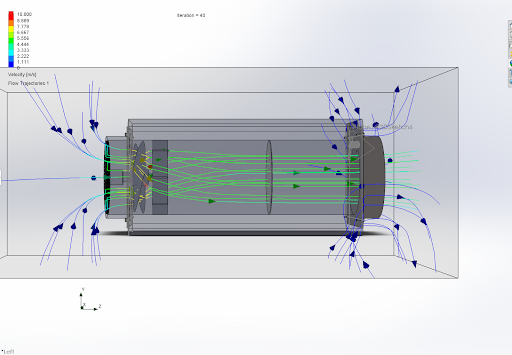
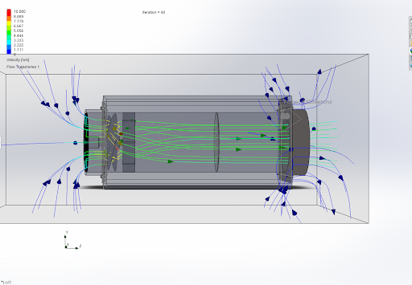
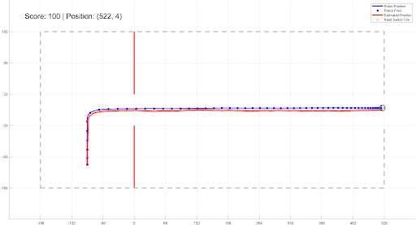
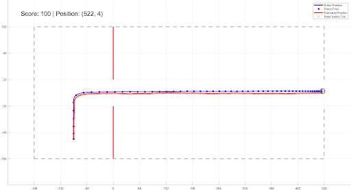

UCI Portfolio
CanSat Competition
For my senior design project, I participated in the year-long UCI CanSat Competition, hosted by the American Astronautical Society. I was part of the mechanical team, primarily responsible for designing a maple seed-inspired structure that served as the payload. Our challenge involved dropping two of these structures from a container, requiring them to descend at a rate of under 20 m/s while being tracked. A diagram of this challenge can be seen below.
Throughout the project, I focused on innovating and refining the maple seed design, exploring various concepts and ideas. One noteworthy design concept, although not ultimately implemented, involved applying Robert Liebeck's propeller theory to create a windmill with flipped camber, mimicking the behavior of a maple seed. A early design of this is pictured below.
The final design of the maple seed featured a platform made of polypropylene sheeting and a housing constructed from 3D-printed PLA. Once we settled on this design, we proceeded to assemble the physical maple seed. Furthermore, we assembled the entire CanSat payload by integrating all its components. These prototypes are pictured below.
It's also worth noting that our team's outstanding work earned us the Dean's Choice Award and a publication in recognition of our exceptional achievement. Our poster for this project can be seen below.
Engineering Conference
During a three-day weekend, I participated in an engineering conference hosted by Boeing at UCI. Initially, I joined a mechanical engineering team tasked with designing a fan system aimed at extracting CO2 from the atmosphere to combat greenhouse gas emissions. Our mechanical engineering team achieved first place for our innovative device. Subsequently, in the integration phase, our team collaborated with computer science, civil engineering, and biochemical engineering teams to develop a fully operational CO2 capture system. This process of integrating various designs proved to be quite complex, but eventually, we successfully crafted the final design. Regrettably, our integration team secured second place among the two competing integration teams. On a positive note, I received recognition as the most creative air mover delegate due to my inventive design ideas and contributions to debates. Following the competition, our team's final report was submitted for publication in the UCI library. Our final designs are depicted below.
 

Aircraft Design
In my senior capstone course, Aircraft Design (MAE 159), I embarked on the design of two distinct aircraft: one tailored for long-range travel and another for shorter distances. The initial phase involved the utilization of MATLAB for the general sizing process, where I explored numerous facets of aircraft design. Notably, I delved into the relationship between operating costs and factors such as sweep and aspect ratio, yielding significant insights. The result of this study is depicted below.
In the latter part of the course, I shifted my focus to the development of CAD models for both aircraft using Solidworks. This phase encompassed the creation of interior layouts (LOPA), economy-class cross-sections, landing gear configurations, and center of gravity (CG) determinations. It's important to note that while various assumptions were made throughout the design process, both aircraft emerged as technically sound and functional. Nevertheless, the short-range aircraft proved to be the more cost-effective and fuel-efficient option. These final designs can be found below.
Propellor Theory
During my senior year I participated in a specialized course led by Robert Liebeck, during which I developed a MATLAB program capable of emulating the processes outlined in "Design of Optimum Propellers" by Charles Adkins and Robert Liebeck. This MATLAB code enabled me to design and evaluate propellers and windmills for a wide range of applications, spanning from high-speed air racers to a Cessna aircraft. Additionally, I authored a comprehensive manual to assist aspiring engineers in crafting their own customized code for similar purposes. Some designs for an Rare Bear Air Racer propeller can be seen below.
Robot Vehicle
During my Mechanical Systems Laboratory course (MAE 106), I designed a gaming controller capable of controlling a virtual robot and character in Agar.io. This controller was programmed using both Arduino and MATLAB. Additionally, I created a propulsion system for a robot using SolidWorks, which was designed to replicate the propulsion method employed in the MATLAB simulation. These designs and final result can be seen below.
 

Neptune Probe
During my Astronautics course (MAE 146) I lead a team of four where we devised a mission with the objective of dispatching a probe to Neptune. The primary goal of this mission was to investigate Neptune's weather patterns and their correlation with its substantial internal heating. To accomplish this mission, we employed an Atlas V-501 rocket for the initial ground launch, alongside an interplanetary transfer maneuver involving a gravity assist from Jupiter. My role in this project encompassed the development of MATLAB code, conceptualizing the mission, and carrying out extensive research. The final trajectory for our rocket can be seen below.
Weiss Lab
I embarked on an interdisciplinary academic journey when I became a member of the Weiss lab at UCI, following a recommendation from a graduate student during a chemistry course. While contributing to graduate-level research within the lab, I successfully drafted and had approved a UROP proposal for the upcoming summer. This proposal outlined the design and implementation of a continuous flow synthesis system, with the ultimate aim of its application in injector technology. However, my evolving interests in my primary area of study led me to make the decision to part ways with the lab before the commencement of the summer research period. The design of this device can be seen below.